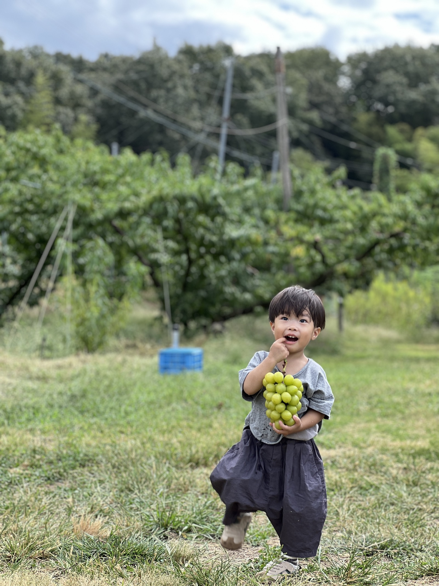
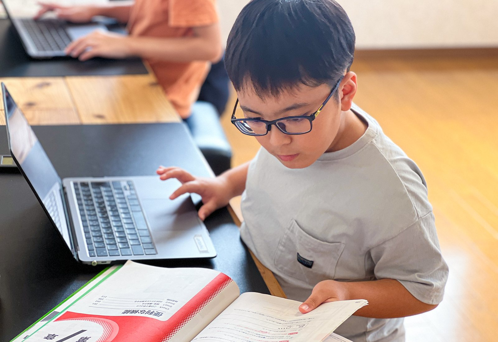

Philosophy
私たちが描く、経済的自立から逆算した10年間のロードマップです。

「将来は就職して、自分の力で生きていってほしい。」
それは、おこさんを大切に想うからこその切実な願いです。
しかし、社会に出てから本当に大切なのは、会社に「入ること」ではなく、「無理なく長く働き続けられること」です。
特性を持つおこさんは、集団生活の中で「周りと同じようにやらなきゃ」と、自分の気持ちを押し殺して無理をしてしまいがちです。その「見えない我慢」を大人になるまで続けてしまうと、社会に出た時に息苦しさを感じたりエネルギーを使い果たしたりして、働き続けることが難しくなってしまうケースが少なくありません。
現在、発達障害の特性のある人の平均年収は約200万円前後にとどまり、約6割が「昇給や賞与の対象になりにくい非正規雇用」で働いているという厳しい現実があります。
これは、決して「能力が低い」からではありません。今の社会の仕組みの中で、特性を持った人がどうしても「つまずきやすい2つの落とし穴」があるからです。
特性に合わない環境で「周りと同じように」を強いられ続けると、こどもは「大人や社会は自分の味方ではない」「自分のSOSは受け入れてもらえない」と学習してしまいます。その結果、社会に出ても「ここが苦手なので配慮してほしい」と自分を守るための交渉ができず、周囲に過剰に適応しようと無理を重ねた結果、働き続けるエネルギーが枯渇してしまうのです。
「ダメ出し」や「正解の押し付け」が多い環境では、失敗が恐怖になり、試行錯誤ができなくなります。すると「自分なら何とかできる」という自己効力感（自分への自信）が育たず、社会の壁にぶつかった時に、傷つかないために自分の行動や判断・仕事などさまざまなことへの選択肢を自ら限定してしまいます。
つまり、「周囲を信頼して自分の状態を伝える力」と、「失敗を恐れず試行錯誤する折れない心」を持たないまま大人になってしまうことが、収入や選択肢の壁を生んでいる本質的な理由です。
だからこそ、私たちが目指すのは目先の「苦手の克服」や「スキル習得」だけではありません。
まずは「ここは安全だ。大人や周囲の人は自分の味方だ。」という基本的な信頼感【安心の土台】を作り、自分で選んで挑戦する【主体性療育】を通して、「自分でなんとかできる」「困ったら人に頼れる」という自分基準の自信を育てます。
その揺るぎない土台の上に乗る「ITという確かな武器」と、ITを通じて身につける「実用的なコミュニケーションスキル」こそが、おこさんが将来自分を守り、社会で豊かに生き抜くための最強の力になると私たちは信じています。
私たちが考える「経済的自立」への道筋は、児童発達支援から放課後等デイサービスまでの一貫した支援で形作られます。「見えない力（土台）」と「見える力（武器）」を両輪として、たくましく自立するまでの10年間をサポートします。

〜見えない力（心の根っこ）〜
まずは、生涯を支える「見えない力」を育てる時期です。安心できる環境の中で、「自分で決めて動く」「失敗しても試行錯誤する」経験を積み重ねます。この過程で自分の気持ちを言葉にする力を手にすることが、将来、周りに過剰に適応して心をすり減らすことなく、「助けて」とSOSを出せるための絶対的な土台になります。

〜見える力（強み）と交渉力〜
心の土台ができたら、本格的なPC課題を通じて「将来の選択肢を広げるITスキル」を身につけます。周りのこが指1本で打つ中で、自分はタッチタイピングでスラスラ打てる。そんな目に見える成功体験が、大きな自信と「パソコンが得意！」という誇りを育みます。
同時に、エラーにつまずいた時に「ここが分からない」と人に頼る練習や、気が乗らない時に「これくらいなら頑張れる」と折り合いをつける経験を積みます。単なるスキル習得にとどまらず、社会で自分を守るための「言葉で交渉する力」を養う実践期です。
〜自分らしく歩む未来〜
これが、私たちの目指す最大の着地点です。「見えない力」と「見える力」を両輪にして進むおこさんは、周囲に流されたり諦めたりするのではなく、自分に合った働き方や環境を、自ら主体的に選んでいくことができます。
自分の特性（トリセツ）を正しく理解し、必要なサポートを周囲へ上手に伝えながら、ITという強みを発揮して社会で活躍していく。自分の価値に自信を持って経済的な自立を果たし、生き生きとたくましく歩んでいく姿へと繋げていきます。
私たちBLUE MOUSEは、この「土台」と「武器」を10年かけて丁寧に育み、おこさんが経済的なゆとりを持ちながら、笑顔で自分らしく生きていける未来を一緒に創っていきます。
この手で、自分の未来を選ぶ。